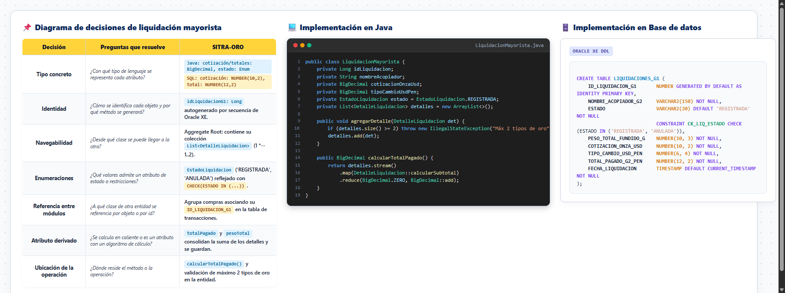

Escuela Profesional deIngeniería de Sistemas
Sesión 03 · Diseño Estructural y SOLID
Principios SOLID y Mapeo Relacional
Desacoplamiento arquitectónico, contratos por interfaz y transformación de clases de dominio a tablas Oracle XE.
S · Single Responsibility (Responsabilidad Única)
LiquidacionG1 solo encapsula el agregado contable; CalculadorPrecioOroService solo calcula cotizaciones spot.
O · Open / Closed (Abierto / Cerrado)
Estrategias de pricing y factoring extensibles mediante interfaces sin alterar la entidad de compra.
L · Liskov Substitution (Sustitución de Liskov)
DashboardAcopioAdapter implementa DashboardAcopioPort cumpliendo exactamente el contrato esperado.
I · Interface Segregation (Segregación de Interfaces)
Puertos modulares finos (EntregaMayoristaPort) en lugar de una interfaz monolítica sobrecargada.
D · Dependency Inversion (Inversión de Dependencias)
Controladores y servicios dependen de repositorios abstractos (Spring Data), desacoplados de detalles de Oracle.

Decisiones de Diseño ➔ Java ➔ Oracle XE DDL
Evidencia Oficial Miro